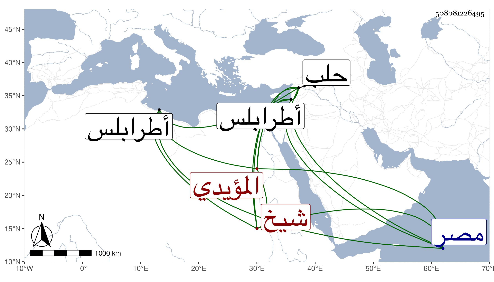

0902Sakhawi.DawLamic.ITO20230111-ara1.EIS1600.508081226495
Biography ID: 508081226495
1026
الطنبغا العلاء المرقبي المؤيدي شيخ ، كان من أعيان مماليكه قبل سلطنته وعمله في أيام تلك الفتن بقلعة المرقب من أيام طرابلس فأقام بها مدة فعرف بينهم بالمرقبي وولاه بعدها نيابة قلعة حلب لاستئمانه عنده ثم قدمه بمصر ثم نقله إلى الحجوبية الكبرى فلما تسلطن الظاهر ططر قبض عليه وسجنه مع من سجن من المؤيدية ثم أطلفه ودام معطلا مدة ثم أعاده الظاهر جقمق إلى التقدمة فلم تطل مدته ومات في ليلة عاشر رجب سنة أربع وأربعين ، ذكره المقريزي باختصار ، وقول العيني أنه أحد أمراء الطبلخاناة ورؤس النوب تقصير .
